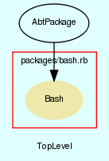

|  |
bash.rb
Bash package.
Created by Eric D. Schabell <erics@abtlinux.org> Copyright 2008, GPL.
This file is part of AbTLinux.
AbTLinux is free software; you can redistribute it and/or modify it under the terms of the GNU General Public License as published by the Free Software Foundation; either version 2 of the License, or (at your option) any later version.
AbTLinux is distributed in the hope that it will be useful, but WITHOUT ANY WARRANTY; without even the implied warranty of MERCHANTABILITY or FITNESS FOR A PARTICULAR PURPOSE. See the GNU General Public License for more details.
You should have received a copy of the GNU General Public License along with AbTLinux; if not, write to the Free Software Foundation, Inc., 51 Franklin St, Fifth Floor, Boston, MA 02110-1301 USA
Constructor for an AbtPackage, requires all the packge details.
PARAM Hash - hash containing all pacakge data.
[ show source ]
# File packages/bash.rb, line 70
70: def initialize()
71: super($packageData)
72: end
Here we manage the ./configure step (or equivalent). We need to give ./configure (or autogen.sh, or whatever) the correct options so files are to be placed later in the right directories, so doc files and man pages are all in the same common location, etc. Don‘t forget too that it‘s here where we interact with the user in case there are optionnal dependencies.
PARAM boolean - true if you want to see the verbose output, otherwise false. Defaults to true.
RETURNS: boolean - True if the completes sucessfully, otherwise false.
[ show source ]
# File packages/bash.rb, line 143
143: def configure(verbose=true)
144: if (verbose)
145: command = "./configure --prefix=#{$BUILD_PREFIX} \
146: --sysconfdir=#{$BUILD_SYSCONFDIR} \
147: --localstatedir=#{$BUILD_LOCALSTATEDIR} \
148: --mandir=#{$BUILD_MANDIR} \
149: --infodir=#{$BUILD_INFODIR} \
150: --enable-static-link \
151: --with-bash-malloc=no \
152: | tee #{$PACKAGE_INSTALLED}/#{@srcDir}/#{@srcDir}.configure"
153: else
154: command = "./configure --prefix=#{$BUILD_PREFIX} \
155: --sysconfdir=#{$BUILD_SYSCONFDIR} \
156: --localstatedir=#{$BUILD_LOCALSTATEDIR} \
157: --mandir=#{$BUILD_MANDIR} \
158: --infodir=#{$BUILD_INFODIR} \
159: --enable-static-link \
160: --with-bash-malloc=no \
161: 1> #{$PACKAGE_INSTALLED}/#{@srcDir}/#{@srcDir}.configure 2>&1"
162: end
163:
164: Dir.chdir("#{$BUILD_LOCATION}/#{@srcDir}")
165:
166: # set our optimizations before configuring.
167: $cflags = "CFLAGS=" + '"' + $BUILD_CFLAGS + '"'
168: puts "Using the following optimizations: export #{$cflags}\n"
169:
170: # now configure.
171: if !system("export #{$cflags}; export CXXFLAGS='${CFLAGS}'; #{command}")
172: puts "[bash.rb] - configure section failed during bash configure, exit code was #{$?.exitstatus}."
173: return false
174: end
175:
176: return true
177: end
Preliminary work will happen here such as downloading the tarball, unpacking it, downloading and applying patches.
PARAM boolean - true if you want to see the verbose output, otherwise false. Defaults to true.
RETURNS: boolean - True if completes sucessfully, otherwise false.
[ show source ]
# File packages/bash.rb, line 84
84: def pre(verbose=true)
85: downloader = AbtDownloadManager.new
86:
87: # download sources.
88: if (!downloader.retrieve_package_source(@name.downcase, $SOURCES_REPOSITORY))
89: return false
90: end
91:
92: # validate sources sha1.
93: if (!downloader.validated(@hashCheck, "#{$SOURCES_REPOSITORY}/#{File.basename(@srcUrl)}"))
94: return false
95: end
96:
97: # unpack sources.
98: if (!unpack_sources)
99: return false
100: end
101:
102: # ensure we have an installed directory to use.
103: if (! File.directory?("#{$PACKAGE_INSTALLED}/#{@srcDir}"))
104: FileUtils.mkdir_p("#{$PACKAGE_INSTALLED}/#{@srcDir}")
105: end
106:
107: #Dir.chdir("#{$BUILD_LOCATION}/#{@srcDir}")
108:
109: # retrieve patches
110: #if (!system("wget #{@patches}/bash32-???"))
111: # puts "[bash.rb] - pre section failed during bash patch downloading, exit code was #{$?.exitstatus}."
112: # return false
113: #end
114:
115: # apply patches by cycling through build directory and applying patches.
116: #Dir.foreach("#{$BUILD_LOCATION}/#{@srcDir}") {|file|
117: # if file.match('bash32-\d\d\d')
118: # puts "[bash.rb] - pre section about to apply patch --verbose -p0 < #{file}"
119: # if (!system("patch --verbose -p0 < #{file}"))
120: # puts "[bash.rb] - pre section failed during bash patch application of file #{file}, exit code was #{$?.exitstatus}."
121: # return false
122: # end
123: # end
124: #}
125:
126: return true
127: end